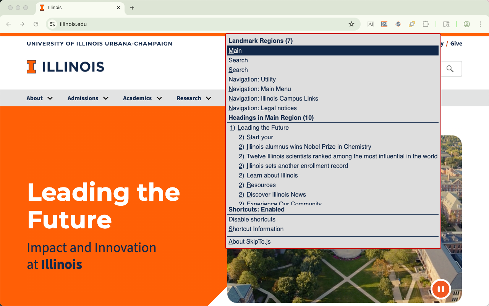

SkipTo.js Browser Extensions

The SkipTo.js browser extensions automatically loads SkipTo.js on to web pages.
Get Extensions
- SkipTo.js for Microsoft Edge
- SkipTo.js for Chrome and should also work with Brave and Vivaldi web browsers
- SkipTo.js for Firefox
- SkipTo.js for Opera
Why Use An Extension?
- People with disabilities can navigate landmarks regions and headings of any website using keyboard commands, extending the browser's simple
tabkeyboard navigation to links and form controls. - All users can get an outline of the page in a single menu to more easily explore the content of a web page.
- Testing your website for using SkipTo.js page script to implement WCAG 2.4.1 Bypass Blocks requirement.
- Testing websites for proper use of landmark regions and headings.
Features
| Feature | Description |
|---|---|
| Single Key Shortcuts | Navigation using single key keyboard shortcuts to landmark regions and headings on a page. |
| Button Visibility |
The "Skip To Content" button can be visible (default) or hidden after the page completes loading. Note:When the SkipTo.js button is visible when the page loads and is obscuring page content use the "hide" button to change SkipTo.js to popup mode. |
| tab | After the page loads, pressing the tab key will bring focus to the "Skip To Content" button. If the button was hidden it becomes visible. |
| space and down arrow |
When focus is on the button, users can open the menu using the space or down arrow key to view or select the landmarks and headings on the page. |
| Landmark Items |
In the landmark regions group the landmarks are ordered by the importance of the landmark for navigation: main, search, navigation, complemntary and contentinfo.
|
| Heading Items |
In the heading group the headings are in document order. By default only h1 and h2 headings are shown in the list. More headings can be shown using configuration options.
|
| Scrolling into View | Moving keyboard focus or hovering over menu items scrolls the associated area on the page into view. |
| Menu Shortcut Key |
A shortcut key can be used to open the SkipTo.js menu from anywhere on the page.
|